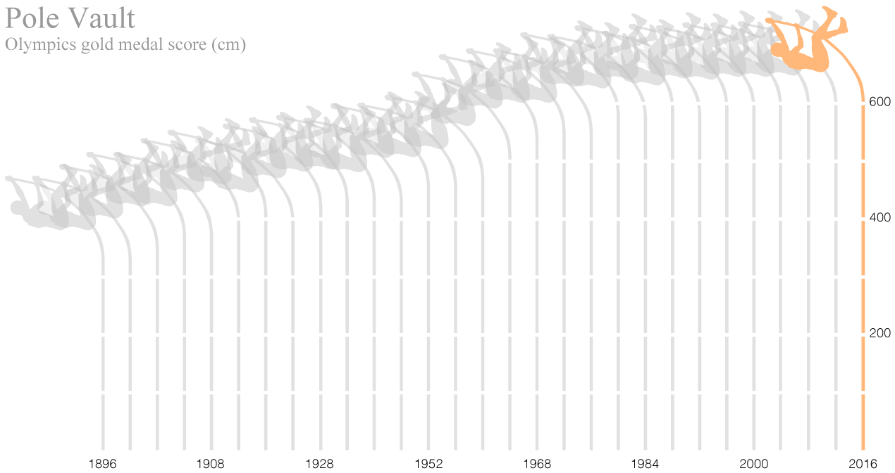

All About Jumping
—— A study of jumping related competitions in Olympics
Graphic by Zhizhou Wang | Source by Olympics database
The Olympics is one of the hottest topic people would talk about every four years, the performance of athletes represents not only the honor of their own, their country, but even the advancement of all mankind. However, while the swimming records are broken almost every 4 years, the broken speed of Olympic record of track and field events is relatively slow. Looking at the Olympics score of four types of jumping related sports, we would therefore explore some changes that contributed to the past progress as well as some reasons of the speed reduction of record-breaking.
High Jump
The high jump is a track and field event in which competitors must jump unaided over a horizontal bar placed at measured heights without dislodging it. In its modern most practised format, a bar is placed between two standards with a crash mat for landing. - Early jumpers used either an elaborate straight-on approach or a scissors technique. - Around the turn of the 20th century, techniques began to modernise, starting with the Irish-American Michael Sweeney's Eastern cut-off. - Another American, George Horine, developed an even more efficient technique, the Western roll, who's technique was predominant through the Berlin Olympics of 1936. - American and Soviet jumpers held the playing field for the next four decades, and they pioneered the evolution of the straddle technique.Straddle-jumperCharles Dumas was the first to clear 2.13 m, in 1956. - Fosbury added a new twist to the outmoded Eastern Cut-off. After he used this Fosbury flop to win the 1968 Olympic gold medal, the technique began to spread around the world. Now the Fosbury flop is the most used technique in the high jump field. Without the invention of better technique, athletes can only refresh the record via the training of themselves. The Olympics record is 2.39 meters, made by Charles Austin from the United States.

Pole Vault
The pole vault at the Summer Olympics is grouped among the four track and field jumping events held at the multi-sport event. The men's pole vault has been present on the Olympic athletics programme since the first Summer Olympics in 1896. The change of material of pole has contributed to the advancement of records. At first, people used solid ash poles. After 1909, we started to use bamboo poles, which are more resilient and light. Tubular aluminum pole replaced the bamboo pole after 1945, it is more solid and less resilient, this has affected the speed of record-breaking. In 1962, the IAAF(International Association of Athletics Federations) accepted the poles that produced by wrapping pre-cut sheets of fiberglass that contains resin around a metal pole mandrel, to produce a slightly curved pole that bends more easily under the compression caused by an athlete's take-off. Since then the Olympics record has been broken more frequently.


Other factors that had affected the record-breaking are the component of the landing area, and the personal training of athletes.
Long Jump
The long jump (historically called the broad jump) is a track and field event in which athletes combine speed, strength, and agility in an attempt to leap as far as possible from a take off point. The long jump is the only known jumping event of Ancient Greece's original Olympics' pentathlon events. Being different from the modern competition, back then athletes were only allowed a short running start with a weight in each hand.

The record of long jump has enhanced 2 meters since it was first approved as a competition in Olympics, where this year’s gold medal score is 0.5 meters lower than the Olympics record. There’s no clear evidence showing that the change of external force would highly affect the jumping distance, therefore, the enhancement of the athletes themselves become essential.
Triple Jump
The triple jump, sometimes referred to as the hop, step and jump or the hop, skip and jump, is a track and field event, similar to the long jump. At first, the second “step” is only a bridge between the first hop and the third jump, in 1936, a Japanese athlete first jumped over 16 meters, he used variance pace to do the three step jump. In the middle of the 50’s, Soviet athletes improved the "hopping” technology, which characterized by a high parabola vacated, delay the leg change time , with a high kick landing mode, and contributed to new enhancement of performance. Triple jump is composed of three consecutive jumps after a run-up. As this sport has so great burden on the lower limbs, the physical requirements for athletes are higher than other sports. It requires athletes to have a fast run-up speed and good jumping ability, as well as strong leg strength.
Looking at all four jumping related competitions in track and field event, it is not hard to find out that despite pole vault, the record of other three sports hasn’t been broken since long, and the pole vault is the only sport that could be affected by the advancement of technology. Technology has contributed a lot in the progress of human being, for instance, the material of swimming suit is essential to the record-breaking. While technology couldn’t help, one can only make progress by training themselves. As for the high jump, the improvement in technique itself can also be a great enhancement in scores. Being different from some specific sports, track and field event is the most common sport that people from all over the world and all different background can easily get access to. The more people exercising at the same time, the faster we go, and it is possible that in some certain sports, we’ve already, or say, we’re very close to the so-called human being’s limit-wall.
Copyright © Zhizhou Wang